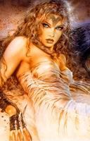

Cymbelîne
Age : 36 ans
Sexe : Femme
Race : Humain
Faction : Alliance
Formation : Voleur
Description : Je suis arrivée à l'abbaye de Northshire très tôt. Mon père, qui m'avait élévé seul jusque là depuis que ma mère était morte en couches, m'y avait emmené. Je ne l'ai revu depuis qu'en de très rares occasions...il demeure encore à ce jour un mystère pour moi.
On me donna une éducation de prêtresse.
Très vite, je me suis aperçue que mon manque de sagesse et de patience ne faisait pas bon ménage dans un environnement studieux.
Les jours s'écoulèrent à l'abbaye, plus ou moins heureux en compagnie de ma meilleure amie, Erianne. nous grandîmes ensemble, partageant tout...nos rêves,espoirs, peines, secrets, confidences...
Erianne mourut en des circonstances étranges quelques jours avant de venir me rejoindre à l'orphelinat de Stormwind où j'avais été envoyé pour aider, nos classes terminées.
Je suis toujours à la recherche du médaillon que je lui avait confié en attendant qu'elle me rejoigne...le médaillon contenait une portrait miniature de celle qui m'a donné la vie, ainsi qu'une mèche de ses cheveux. Un cadeau que m'avait offert mon père lors d'une de ses si rares manifestations.
Plus d'infos sur Cymbelîne >>>Lire les 72 récits de Cymbelîne >>>